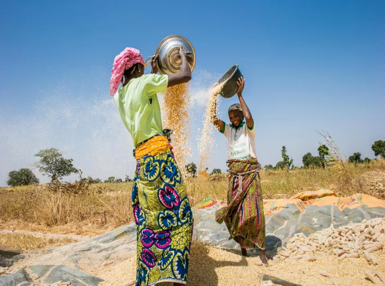

Annex – Detailed Partner Roles 1
Northern Nigeria produced more than half of the country's maize, yet production remained fragmented across thousands of smallholder farmers with limited access to finance, quality inputs, and reliable markets. Despite strong commercial demand, most farmers remained too small, too dispersed, and too risky to access formal credit or engage directly with large buyers.
|  |
In response, Babban Gona developed an integrated aggregation platform that organizes farmers into standardized Trust Groups, bundling input financing, agronomic training, input distribution, harvest aggregation, warehousing, and market access within a single coordinated system. This case illustrates the Aggregation and Warehouse Platforms model from the ‘Advancing Partnerships Between Private Sector and Development Actors in Africa‘ Playbook demonstrating how aggregation, standardization, and layered financing can transform fragmented production into an investable and scalable agricultural platform
Founded in 2012 by Kola Masha and Lola Masha, Babban Gona has since attracted catalytic, sovereign, and commercial investment while building long-term partnerships with buyers such as Nestlé, becoming one of Nigeria's largest single maize producers.
THE OPPORTUNITY AT SCALE | 50–60% of Nigeria's maize produced in northern Nigeria | Thousands of dispersed smallholder farmers supplying the maize value chain | Strong demand from food processors, feed manufacturers, and commercial buyers |
THE CASE AT A GLANCE
Program | Babban Gona Smallholder Aggregation Platform |
Playbook model | Model 1 — Aggregation and Warehouse Platforms |
Timeline | Founded 2012 · First institutional debt 2017 · Commercial lending 2022 · Climate finance 2025 |
Scale | 200,000+ farmers across 13 states in northern Nigeria; 600,000+ people impacted |
Financing | ≈ USD 85M mobilized to date — FMO, Global Innovation Fund, NSIA, EDFI/AgriFI, Citibank Nigeria, BII |
Lending terms | In-kind input credit recovered from aggregated harvest proceeds before final farmer dividend |
Led by | Babban Gona, with FMO, Global Innovation Fund, NSIA, EDFI, Citibank Nigeria, BII, and commercial buyers including Nestlé |
| ||||||||||||||||||||||||
WHY THE STATUS QUO WAS UNSUSTAINABLE
Fragmentation created system-wide constraints that extended well beyond individual farm productivity. It weakened market efficiency, limited farmers' commercial opportunities, and kept smallholder agriculture outside the reach of formal finance.
PRODUCTIVITY CONSTRAINTS ● Undercapitalized farms operating below potential yield ● Limited access to improved seeds, fertilizer, and mechanization ● Productivity structurally suppressed across the sector | MARKET DISADVANTAGE ● Limited bargaining power in sales to local traders ● Little visibility over market prices ● Only a small share of final market value captured by farmers | INVESTMENT GAP ● High transaction costs of serving dispersed producers individually ● Financial institutions unable to assess individual farmer risk ● Capital available in the ecosystem but not deployed to smallholders |
By the early 2010s, the constraint was clear: it was not a lack of demand, producers, or capital, but the absence of a platform capable of organizing fragmented production into a coordinated, investable system — this is the status quo the platform set out to change. |
The Playbook approaches partnership design as a diagnostic exercise rather than a model selection exercise. It recognizes that many initiatives already demonstrate strong social impact, trusted delivery relationships, and clear development value, yet struggle to achieve scale, sustainability, or meaningful private-sector participation. The objective of the diagnostic is therefore to identify the structural conditions limiting deployment and understand why promising initiatives fail to become investable, scalable, and sustainable.
The diagnostic examines seven complementary analytical lenses:
1 | Demand and commercial pathways — Assesses whether strong social demand has been translated into credible commercial demand supported by sustainable payment and offtake mechanisms. |
2 | Project preparation and readiness — Evaluates whether projects have progressed beyond concept stage into technically, financially, legally, and institutionally prepared investment opportunities. |
3 | Financing logic — Examines whether an appropriate financing architecture exists to mobilize, deploy, and sustain capital over time. |
4 | Risk allocation — Assesses whether technical, financial, operational, and institutional risks are allocated to the actors best positioned to manage them. |
5 | Institutional coordination and role clarity — Evaluates whether responsibilities, leadership, and coordination mechanisms are sufficiently clear to support implementation at scale. |
6 | Legitimacy and community integration — Examines whether legitimacy, stakeholder ownership, and community engagement support long-term adoption and implementation. |
7 | Operational sustainability and scalability — Assesses whether the operational, institutional, and market conditions required for long-term scaling are already in place. |
The resulting diagnostic provides the analytical foundation for identifying the binding constraints that limit deployment and inform subsequent partnership model choice.
Applying the Playbook framework revealed three interrelated structural constraints that prevented northern Nigeria's maize sector from moving beyond fragmented economic activity to large-scale commercial deployment.
CONSTRAINT | WHAT EXISTED The strengths and assets in place | WHAT WAS MISSING The key gap blocking deployment |
1 Opportunities without Visibility | Northern Nigeria already possessed a large, economically active smallholder farming sector supported by strong commercial demand for maize. Hundreds of thousands of producers cultivated maize each season, supplying processors, feed manufacturers, and other commercial buyers through established value chains. | A coherent market buyers could assess Production was dispersed across thousands of independent producers, each marketing limited volumes through separate relationships. Information on capacity, quality, and reliability remained fragmented, making it too costly for buyers, lenders, and investors to assess opportunities individually. |
2 Production without Standardization | A large network of experienced producers cultivating the same staple crop under similar conditions, supported by input suppliers, extension providers, financial institutions, and processors — with strong commercial incentives to increase production. | Consistent, measurable production Farming practices, input use, productivity, and post-harvest handling varied considerably across producers. Without common standards or reliable performance data, buyers and lenders could not compare or predict commercial performance. |
3 Finance without Investability | Commercial banks, development finance institutions, and impact investors with an interest in the sector, plus commercial buyers representing credible long-term partners — both capital and market access were already present in the ecosystem. | A financeable unit Small farm sizes, fragmented production, and limited data made it impossible for institutions to assess risk or justify the transaction costs of financing thousands of individual producers. The missing ingredient was not capital, but opportunities that could be evaluated and financed at scale. |
These constraints are deeply interconnected and reinforce one another — creating a deployability gap that prevented northern Nigeria's maize sector from moving from recognized economic activity to large-scale commercial investment. |
The constraints identified through the diagnostic align closely with the situations for which the Aggregation and Warehouse Platform model was designed. Rather than addressing a single constraint, the model strengthens the broader conditions required for commercial engagement through four complementary functions:
Market visibility increases the visibility of fragmented economic activity by organizing dispersed producers into a single commercial structure. Rather than requiring buyers, lenders, or investors to assess thousands of individual producers separately, the platform consolidates production into a coherent, transparent market — the direct answer to opportunities without visibility.
Quality standards improve commercial reliability by introducing common production practices, input use, and performance monitoring across participating producers. Rather than evaluating heterogeneous farms individually, commercial actors engage with a system operating under consistent expectations — closing the standardization gap.
Investability follows from reduced transaction costs. By organizing production into a structured commercial system, the platform enables buyers, lenders, and investors to evaluate opportunities efficiently — creating the financeable unit the diagnostic identified as missing.
Scaling, finally, is the outcome rather than the starting point. Because growth occurs within a common operational framework rather than through isolated transactions, the platform can continuously incorporate additional producers without proportionally increasing coordination costs.
WHY ALTERNATIVE APPROACHES WERE LESS SUITABLE
Financing - only More capital — but unresolved transaction-cost and information barriers would have kept individual smallholders too costly to appraise and monitor | Technology - only Improves yields — without the bargaining power, quality assurance, or market access that only aggregation provides | Grant - based Strengthens individual groups — without standardized production or consolidated data, leaving smallholders unattractive to commercial capital |
SIX UNDERLYING ASSUMPTIONS: Sustained commercial demand for maize · Aggregation able to transform unit economics · Standardization able to deliver consistent performance · Social capital able to substitute for collateral · Capital layerable progressively as risk declines · The franchise model able to scale. |
The partnership was designed to transform fragmented agricultural production into a coordinated, commercially investable market system — combining complementary functions performed by public, private, financial, technical, and commercial actors across the deployment pathway.
ACTOR | Organize | Coordinate | Finance | De-risk | Deliver | Implement | Offtake |
Babban Gona | ● | ● |
|
| ● |
|
|
DFIs and Investors — FMO · GIF · NSIA · EDFI · Citibank · BII |
|
| ● | ● |
|
|
|
Trust Groups and Franchise Leaders |
|
|
|
| ● | ● |
|
Commercial Buyers — Nestlé, poultry producers |
|
|
|
|
|
| ● |
Babban Gona is the only actor spanning organization, coordination, and service delivery — the integrator at the heart of Model 1. |
By the mid-2010s the question was no longer whether smallholder production could be aggregated, but how to finance it at scale: Babban Gona has since mobilized approximately USD 85 million in debt, equity, and grant funding — far beyond what any single instrument could have provided. The answer was a coalition in which each partner plays to its comparative advantage.
ROLE CARDS
Babban Gona Anchor and integrator — the only actor spanning organization, coordination, and service delivery ■ Organizes farmers into standardized Trust Groups led by Franchise Leaders ■ Bundles input financing, agronomic training, aggregation, and warehousing into one platform ■ Retains aggregated credit and market risk on its own balance sheet, aligning incentives with portfolio quality | ||
Development Finance Institutions and Investors Layered capital, sequenced by risk ■ FMO, Global Innovation Fund, and NSIA provided first institutional debt (2017–2018), junior capital crowding in senior lenders[1][2][3] ■ EDFI/AgriFI structured junior capital; Citibank Nigeria brought commercial local-currency lending in 2022[4][5] ■ BII's 2025 investment extended the platform toward climate resilience, targeting ≈140,000 farmers by 2029[6] | Trust Groups and Franchise Leaders Field-level delivery and repayment discipline ■ Organize farmers into small, self-selected, jointly accountable groups ■ Deliver training, inputs, and continuous technical supervision through the season ■ Earnings linked to group performance — a pathway from farmer to agricultural micro-entrepreneur | |
Commercial Buyers — Nestlé, poultry producers Reliable, quality-assured market access ■ Procure aggregated volumes through Babban Gona rather than thousands of individual farmers ■ Reduce procurement costs; portions of production reportedly pre-sold before harvest ■ Predictable offtake reinforces investor confidence and quality incentives for producers | ||
Detailed descriptions of each partner's role are provided in Annex.
The platform's financing architecture evolved progressively over more than a decade. Rather than beginning with large-scale commercial capital, Babban Gona sequenced different forms of finance against its demonstrated performance, with each layer reducing the risk perceived by the next.
Philanthropic and development support financed the platform's early years — building the operating model, testing the Trust Group structure, and demonstrating that smallholder lending could perform reliably. As repayment performance and operational data accumulated, institutional capital entered progressively: FMO and the Global Innovation Fund in 2017, NSIA and EDFI/AgriFI in 2018, Citibank Nigeria's commercial facility in 2022, and BII's climate-focused investment in 2025 — transforming a demonstrated model into a nationally scalable financing platform.
THE BLENDED FINANCE ARCHITECTURE
Babban Gona
Builds the aggregation platform
DFIs
Concessional Capital
Scale
Expands capital base
↓ Philanthropic and Early Capital ■ Trust Group model design and testing ■ BG Farm University training systems ■ Initial farmer network expansion ■ Demonstrated repayment performance | ↓ Concessional and Subordinated Debt ■ FMO MASSIF loan (2017) ■ Global Innovation Fund subordinated debt (2017) ■ NSIA sovereign debt and EDFI/AgriFI junior capital (2018) | ↓ Commercial and Climate Capital ■ Citibank Nigeria local-currency lending (2022) ■ British International Investment climate financing (2025) ■ ≈ USD 85M mobilized cumulatively |
Capital Deployment
Capital mobilized at platform level is deployed through Babban Gona's annual production cycle rather than as cash loans to individual farmers:
FROM BLENDED CAPITAL TO FARMER-LEVEL FINANCING
BLENDED CAPITAL FMO · GIF · NSIA · EDFI: concessional and subordinated debt Citibank · BII: commercial and climate capital | → | BABBAN GONA In-kind input credit to Trust Groups (seeds, fertilizer, training) Retains aggregated credit risk | → | FARMERS Invest in inputs, training, and warehousing services Aggregated and marketed through the warehouse network |
← Repayment from aggregated harvest proceeds — input loans recovered before final farmer dividend | ||||
KEY MECHANISM No new expenditure is created — farmers redirect the recurring cost of informal credit and post-harvest distress sales toward the investment that improves their yields. |
Financial Discipline and Risk Management
The platform's repayment record — approximately 99% across more than a decade of lending[7] — rests on mutually reinforcing mechanisms rather than conventional collateral. Trust Groups are small, self-selected, and jointly accountable; Franchise Leaders are trained, monitored, and rewarded on group performance; and in-kind input distribution limits diversion of loan proceeds to non-productive uses.
Babban Gona retained aggregated credit and market risk on its own balance sheet rather than transferring it to farmers or investors, aligning the platform's incentives directly with portfolio quality. Digital monitoring of input distribution, training participation, and expected yields allows emerging portfolio problems to be identified early — and climate risk management has been strengthened through drought-resilient seeds and multi-peril area yield insurance introduced alongside BII's 2025 investment.
Incentive Alignment
The model aligned commercial, financial, and development incentives around a shared objective: making smallholder production commercially viable at scale. Participation replaced expensive informal credit and post-harvest distress sales with affordable input financing and access to premium markets — with yields of up to twice the national average and net incomes of up to three and a half times those of the average smallholder.
INCENTIVE ALIGNMENT — WHY EVERY ACTOR STAYS AT THE TABLE
Babban Gona Builds a professionally managed, investable aggregation platform | DFIs and Investors Converts a previously unbankable segment into a portfolio with a demonstrated track record | Commercial Buyers Secures reliable, quality-assured volumes through a single counterparty | ||
Farmers Replace expensive informal credit and distress sales with affordable financing and premium market access | → | SHARED OBJECTIVE Making smallholder production commercially viable at scale | ← | Franchise Leaders Gain a pathway from farmer to agricultural micro-entrepreneur, with earnings linked to group performance |
Northern Nigeria's Rural Economy Viable agricultural livelihoods strengthen economic resilience in a security-sensitive region | Development Partners Gain a scalable, commercially disciplined channel for improving rural livelihoods | Each actor's success reinforces the others' — a self-reinforcing ecosystem. |
These complementary incentives created strong interdependence across the partnership. The platform's lending model depended on farmers' productivity and repayment; farmers' income gains depended on the platform's financing, agronomy, and market access; buyers depended on standardization and aggregation; and investors depended on the integrity of the entire cycle.
Babban Gona's governance operates primarily through a corporate structure: a professionally managed company coordinating thousands of micro-level production units, with accountability to investors exercised through financing agreements and reporting rather than shared governance bodies. This structure concentrates decision-making authority while allowing implementation to remain deeply decentralized.
GOVERNANCE AT A GLANCE — THREE PILLARS
Decision-making Authority concentrated in a professional operating company Executive Management Strategic priorities · investor relationships · institutional performance Regional Operations Teams Coordinate implementation across participating states Franchise Leaders Supervise Trust Groups at community level Farmers Implement production standards; participate in Trust Group decisions | Coordination The agricultural season is the coordination backbone Babban Gona Central Operations ↓ Regional Operations Teams ↓ Franchise Leaders ↓ Trust Groups ↓ Farmers Input suppliers and commercial buyers managed centrally on the network's behalf | Accountability Embedded in the platform's financial architecture ■ Repayment-before-dividend mechanism links farmer outcomes to performance ■ Franchise Leader earnings depend on group discipline ■ Investor due diligence and reporting — FMO, GIF, NSIA, EDFI, Citibank, BII ■ Independent assessment: 80% of surveyed farmers satisfied; 89% intend to re-enroll[8] |
Three features distinguish this governance model. Accountability is embedded in the commercial arrangement itself rather than delegated to external oversight; coordination runs through the agricultural production cycle rather than a bureaucratic hierarchy; and responsibilities follow each level's operational role — allowing a highly decentralized network to be run by a compact management team.
The platform's results extend well beyond the growth of a single agricultural enterprise. Babban Gona demonstrated that fragmented smallholder production can be organized into a commercially investable system — validating the central proposition of the Aggregation and Warehouse Platform model — while delivering measurable improvements in productivity, incomes, and market functioning.
THE IMPLEMENTATION JOURNEY
2012 | Babban Gona founded by Kola Masha and Lola Masha; Trust Group model and BG Farm University established |
2017 | First institutional debt — FMO USD 4M (MASSIF) and Global Innovation Fund USD 2.5M subordinated capital[9] |
2018 | NSIA USD 5M sovereign debt; EDFI/AgriFI EUR 5M junior capital crowds in senior lenders[10][11] |
2021 | FMO approves a financing facility of up to USD 15M[12]; season finances 22,000+ farmers, 70,000+ MT harvested[13] |
2022 | Citibank Nigeria NGN 4bn commercial working-capital facility — first local-currency commercial lending[14] |
2025 → | BII USD 7.5M climate-focused investment; targets ≈140,000 farmers by 2029[15] |
Each phase of this journey built confidence before larger commitments were made — the defining characteristic of Model 1.
FROM EARLY MODEL TO NATIONAL PLATFORM
As implementation progressed, the platform matured across multiple dimensions simultaneously — not only in the number of participating farmers, but in its financing architecture, service offer, and role within Nigeria's agricultural economy.
EARLY MODEL (2012–2017) | NATIONAL PLATFORM — TODAY | ||
Financing architecture | Philanthropic and development support | → | Blended platform — FMO, GIF, NSIA, EDFI, Citibank, BII |
Investor base | Single-source concessional support | → | Layered concessional, sovereign, and commercial capital |
Delivery network | Trust Groups piloted in early communities | → | 200,000+ farmers across 13 states, franchise network |
Service offer | Input credit, training, and aggregation | → | Adds crop insurance and drought-resilient seed varieties |
Evidence base | Internal performance tracking | → | Independent DFI due diligence; FMO-commissioned impact assessment |
Beyond its direct results, Babban Gona changed the way smallholder agriculture is perceived by capital providers. By demonstrating that a professionally managed platform could sustain near-perfect repayment across tens of thousands of smallholder borrowers, it established a credible pathway for commercial capital to enter a market segment previously considered uninvestable.
The significance of this transformation extended well beyond finance. By enabling hundreds of thousands of smallholder farmers to access quality inputs, technical support, affordable credit, and reliable markets through a single coordinated platform, the model demonstrated that commercial viability and inclusive rural development can reinforce one another at scale.
The Citibank transaction represented an important milestone: a commercial bank providing local-currency working capital based on the platform's proven performance rather than donor support alone. It demonstrated that strong operational performance could progressively crowd in domestic commercial finance for smallholder agriculture.
More broadly, the case reinforces one of the Playbook's central propositions: development resources create their greatest value when they build the systems required for delivery rather than financing the same purchases repeatedly. A single financing architecture, structured around demonstrated performance, produced a platform that has supported more than 200,000 smallholder farmers while creating the confidence needed for commercial capital to participate sustainably.[16]
While Babban Gona demonstrates the potential of Model 1 to make smallholder agriculture investable, its performance depends on contextual conditions and carries risks that should inform any attempt to apply the model elsewhere.
Case-specific risks Sustaining the Babban Gona platform Climate exposure — rain-fed maize means adverse weather affects the entire portfolio simultaneously, only partially offset by drought-resilient seeds and insurance Commodity concentration — heavy dependence on a single crop; price volatility directly affects farmer profitability and repayment capacity Currency risk — naira depreciation raises import costs and complicates hard-currency debt service, mitigated but not eliminated by local-currency financing Security environment — operations concentrated in northern Nigeria, where insecurity can disrupt field operations, logistics, and market access | Model-level risks Conditions required to apply Model 1 elsewhere Balance-sheet concentration — the platform absorbs the credit, production, and market risk that deterred other actors; a systemic shock would strike its own balance sheet directly Dependence on blended capital — concessional and development capital remain central to the funding structure despite progress toward commercial finance Scalability of social capital — repayment discipline rests on Trust Group cohesion and Franchise Leader quality, difficult to replicate quickly at much larger scale Institutional dependence — the platform remains closely associated with its founders; key-person and management succession risk is material |
The case demonstrates that Model 1 should be transferred as a process rather than replicated as a fixed institutional arrangement.
Transfer the process Highly transferable across sectors and geographies ■ Organize dispersed producers into standardized units ■ Embed financing in the production cycle, not as a separate loan ■ Generate credible, continuous performance data ■ Use junior capital deliberately to crowd in senior lenders ■ Recover repayment through the value chain rather than individual enforcement ■ Let a demonstrated track record pull the platform progressively toward commercial finance | Adapt the configuration Context-specific — adjust to local institutions and markets ■ The aggregated commodity (maize; must be storable) ■ The financial intermediary and franchise structure ■ The mix of development and commercial partners ■ Composition of the layered financing architecture ■ Sector priorities and local market maturity | |
Replicate the underlying logic — make fragmented production legible, standardized, and investable — not Babban Gona's institutional configuration. | ||
Ultimately, the case suggests that the strength of Model 1 lies less in any individual institution or financing instrument than in its ability to organize demand, capability, capital, and coordination into a single predictable, investable system. That legibility — not the size of any single investment — is what allowed a modest early platform to draw progressively more commercial capital over more than a decade.
The Babban Gona case demonstrates that the success of Model 1 extends beyond any single transaction. Its principal strength lies in reorganizing existing capabilities — demand, production, capital, and coordination — around visibility, standardization, and aligned incentives. The following insights highlight the broader lessons emerging from the case.
INSIGHT — WHAT THE CASE SHOWS | RECOMMENDATION — WHAT TO DO | |
Aggregation converts transaction costs into an investment proposition | → | Finance intermediaries, not only end beneficiaries |
The investable unit matters more than the creditworthiness of the end borrower | → | Redesign the investable unit rather than reforming beneficiaries individually |
Standardization and continuous data are what make aggregation bankable | → | Embed repayment in the commercial cycle rather than relying on enforcement |
Social capital can substitute for collateral when embedded in the commercial cycle | → | Use junior capital deliberately as a crowding-in instrument |
Blended capital works when sequenced against demonstrated risk reduction | → | Replicate the sequencing, not the institutional configuration |
Babban Gona demonstrates that Model 1 is more than a logistics arrangement for collecting and storing crops. At its most effective, an aggregation and warehouse platform is an institutional technology for converting fragmentation itself — the defining constraint of African smallholder agriculture — into an investable structure. By organizing dispersed producers into standardized units, embedding finance in the production cycle, and allowing a decade of demonstrated performance to draw in progressively more commercial capital, the platform made smallholder farming legible to markets without stripping farmers of ownership or agency. The case suggests that the deepest contribution of aggregation platforms lies not in the services they deliver, but in the market infrastructure they create — infrastructure that allows commercial capital, at scale, to finally reach the producers who feed the continent.
SCALE FOLLOWS LEGIBILITY, NOT CAPITAL
Organize | → | Train | → | Prove | → | Fund | → | Expand | → | Scale |
Trust Groups formed; BG Farm University launched | Input credit and training standardized network-wide | Repayment record demonstrated at ≈99% | FMO, GIF, NSIA, EDFI layer in concessional debt | Citibank and BII bring commercial and climate capital | 200,000+ farmers, 13 states, ≈USD 85M mobilized | |||||
Model 1's greatest contribution is not the capital it attracts, but the coordination it creates where fragmentation previously prevented scale. | ||||||||||
Annex – Detailed Partner Roles
This annex provides additional information on the specific responsibilities and contributions of each partner involved in the Babban Gona Smallholder Aggregation Platform.
Babban Gona served as the anchor institution and platform designer across the entire pathway. Recognizing that fragmented smallholder production could be organized into a commercially viable system, the company built the aggregation platform that became the foundation of the partnership — organizing farmers into Trust Groups led by Franchise Leaders, and delivering agronomic and financial training through its internal BG Farm University alongside seasonal input credit, improved seeds, fertilizers, and continuous technical support.
Beyond producer organization, Babban Gona coordinated the entire value chain — managing relationships with capital providers, input suppliers, and commercial buyers while overseeing input distribution, crop monitoring, harvest collection, transportation, warehousing, and sales. Input loans were recovered directly from harvest proceeds before farmers received their final dividend, substantially reducing transaction costs while keeping the platform's incentives aligned with portfolio quality throughout its expansion across northern Nigeria.
Development Finance Institutions and Investors
Development finance institutions, impact investors, sovereign investors, and philanthropic organizations played a central role in enabling Babban Gona's aggregation model. Rather than financing individual farmers directly, these organizations invested in the platform itself — financing its operating infrastructure, seasonal input credit, extension and training services, warehousing and logistics capacity, and the portfolio management systems required to coordinate thousands of participating farmers. Each organization contributed instruments aligned with its mandate and risk appetite, combining philanthropic capital, concessional finance, and commercial investment within a layered structure that reduced investment risk in the platform's early stages.
FMO: Anchoring Early Institutional Debt
FMO extended a USD 4 million loan to Babban Gona in 2017 through MASSIF, the financial-inclusion fund it manages on behalf of the Dutch government — the platform's first major institutional debt facility. In 2021, following successful deployment of the initial loan, FMO committed a senior debt facility of up to USD 15 million to support national expansion, its sustained participation across two financing cycles signaling institutional confidence in the platform's credit performance.
Global Innovation Fund: Absorbing Early Risk through Subordinated Capital
The Global Innovation Fund provided a USD 2.5 million subordinated debt investment in 2017. By deliberately taking a junior position in the capital structure, GIF improved the risk profile faced by senior lenders and helped crowd in several times its original investment from Nigerian, European, and American investors — part of the approximately USD 85 million Babban Gona has since raised in debt, equity, and grant funding.
Nigeria Sovereign Investment Authority: Committing Domestic Sovereign Capital
NSIA, Nigeria's sovereign wealth fund, made a USD 5 million debt investment in Babban Gona in 2018 through its Nigeria Infrastructure Fund. The participation of a domestic sovereign investor broadened the platform's capital base beyond international development finance and anchored the initiative within Nigeria's own agricultural investment strategy.
EDFI Management Company (AgriFI): Structuring Junior Capital to Crowd In Senior Debt
Through the EU-funded AgriFI facility, EDFI Management Company invested EUR 5 million in junior debt. The subordinated structure was explicitly designed to enable Babban Gona to raise approximately EUR 15 million in senior debt while maintaining robust financial ratios — extending the same crowding-in logic pioneered by GIF's earlier investment.
Citibank Nigeria, U.S. DFC and the Ford Foundation: Mobilizing Commercial Local-Currency Finance
In 2022, Citibank Nigeria extended a NGN 4 billion (approximately USD 10 million) working-capital facility to Babban Gona under the Scaling Enterprise Facility, a partnership between Citi, the U.S. International Development Finance Corporation, and the Ford Foundation. The facility financed seasonal input loans and harvest advances for approximately 41,000 smallholder farmers and marked the platform's progression from concessional toward commercial funding — in local currency, materially reducing foreign-exchange risk.
British International Investment: Financing Climate Resilience at Scale
In September 2025, BII committed USD 7.5 million in debt financing to expand the platform's climate-smart services — including drought-resilient seed varieties and multi-peril area yield insurance — with the objective of improving yields, incomes, and climate resilience for approximately 140,000 farmers in northern Nigeria by 2029, illustrating the platform's continued ability to attract institutional capital more than a decade after inception.
Trust Groups and Franchise Leaders
Trust Groups and Franchise Leaders translated Babban Gona's operating model into field-level implementation. Participating farmers were organized into small Trust Groups led by Franchise Leaders, who coordinated input distribution, delivered training developed through BG Farm University, monitored adoption of recommended practices, and provided continuous technical guidance. Franchise Leaders also tracked production performance and reinforced repayment discipline, reporting field-level information back to the platform and enabling Babban Gona to monitor portfolio quality while responding quickly to operational challenges.
Commercial buyers, including Nestlé and large-scale poultry producers, provided the market demand required to sustain the platform. Rather than purchasing from thousands of individual farmers, they procured aggregated volumes through Babban Gona, enabling efficient sourcing while ensuring production met agreed quality and quantity requirements. Long-term commercial relationships created strong incentives for producers to adopt improved practices, reinforced investor confidence, and enabled Babban Gona to expand its producer network while maintaining sustainable relationships between farmers, buyers, and financial partners.
References & Notes
FMO, "Making Smallholder Farming Profitable" (2017 Annual Report case study) ↑
Global Innovation Fund, "Babban Gona" investment profile (2017) ↑
Nigeria Sovereign Investment Authority, "Babban Gona" portfolio profile (2018) ↑
EDFI Management Company / AgriFI, "Babban Gona" project profile (2018) ↑
Babban Gona, "Citibank Partners Babban Gona to Support Over 40,000 Smallholder Farmers" (2022) ↑
British International Investment, "BII commits $7.5 million to Babban Gona to boost food security and climate resilience for smallholder farmers in Northern Nigeria" (September 2025) ↑
FMO (2021). Project Detail – Babban Gona Farmer Services Nigeria ↑
FMO, "Stimulating the Potential of Nigeria’s Smallholder Farmers" (impact evaluation) ↑
Global Innovation Fund, "Babban Gona" investment profile (2017) ↑
Nigeria Sovereign Investment Authority, "Babban Gona" portfolio profile (2018) ↑
Global Innovation Fund, "Babban Gona" investment profile (2017) ↑
FMO. Project Detail – Babban Gona Farmer Services Nigeria (2021) ↑
Babban Gona, "Citibank Partners Babban Gona to Support Over 40,000 Smallholder Farmers" (2022) ↑
British International Investment, "BII commits $7.5 million to Babban Gona to boost food security and climate resilience for smallholder farmers in Northern Nigeria" (September 2025) ↑
Nigeria Sovereign Investment Authority, "Babban Gona" portfolio profile (2018) ↑